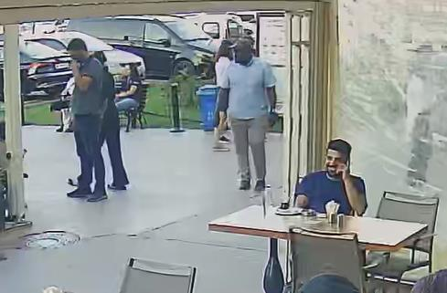
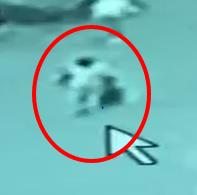
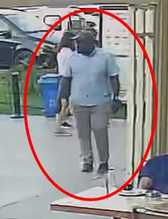
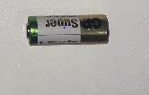

OLAY CD İNCELEME ARAŞTIRMA ve
YAKALAMA TUTANAĞI
1.OLAY(2022/2511) AÇIKTAN HIRSIZLIK
Müşteki İsmail FİDAN alınan ifadesinde; Ben halen yukarıda beyan etmiş olduğum adreste ikamet ederim. Bugün yani 20.07.2022 Günü Saat:14:15 sıralarında 34GT1902 plaka sayılı Reneult(clio) marka bej renk aracımla Yenişehir Mahallesi Dedepaşa Caddesi üzerinde bulunan Vıaport avm isimli işyerine gittim. Aracımı avm nin açık otopark girişinin sağ
kısmından 3. sırasının 2. hizasına park ettim. Aracımdan indim aracmın kapısını kapatıp aracın camlarını kapayarak aracın yanından ayrıldım. Aracın kapılarını kilitlediğimi düşünüyorum Aracımın yanından ayrıldıktan sonra avm içindeki işlerimi hallederek saat:14:57 sıralarında tekrar aracımın yanına geldim. Aracımın yanına geldiğimde aracımın kilitli olmadığını fark ettim. Aracımda herhangi bir zorlama kırık vb bir durum bulunmadığı için şüphelenmeyerek Aracıma binerek Avmden uzaklaşmaya başladım. Yolda ilerlediğim esnada araç içerinde bulunan kahverengi bilgisayar çantasını kontrol ettiğimde çantanın yerinde olduğunu ancak çanta içerisinde bulunan NXGKKEY003643027E17200 Seri numaralı Acer marka Luxury Gold renk bilgisayarımın yerinde olmadığını fark ettim. Aracı ve çantamı detaylıca kontrol ettim ancak bilgisayarı bulamadım. Bilgisayarımın avm otoparkında çalındığını fark ettim. Olaydan yaklaşık maddi kaybım 7.000 Tl civarındadır. Şüphelendiğim kimse yoktur. Bilgisayarımın kaskosu yoktur. Olay sonrası aracın kilit sistemini kontrol ettiğimde aktif olarak çalıştığını gördüm. Konu ile ilgili olarak olayı gerçekleştiren şahıs ya da şahıslardan ŞİKÂYETÇİYİM.
Dedi.
TUUL4754 isimli görüntü dosyasında kamera saatine göre 14.18.50 sıralarında şüpheli şahsın kamera açısında görüldüğü,
1
Kameranın olay yerine uzak olduğu ve kamera netliğinin kötü olduğu, şüpheli şahsın müşteki şahsın aracının yanına gelerek aracın kapısını hiç zorlamadan 50. Saniyede araca bindiği, saat 14.21.05 sıralarında şüpheli şahsın araçtan inerek hızlıca olay yerinden uzaklaştığı, Şüpheli şahsın AVM içerisinde yapılan güzergâh çalışmasında saat 14.33.30 sıralarında
LMNO3268 i simli kamera açısından geçtiği, şüpheli şahsın sol elinde beyaz renk poşet olduğu, 2
Ayrıca şüpheli şahsın kafasında şapka, ayağında siyah ayakkabı, açık renk pantolon, koyu renk tişört giyimli olduğu görülmüştür.
Olayı gerçekleştiren şüpheli şahsın araca araç kapısını hiç zorlamadan girdiği görülmesi üzerine elinde sinyal kesici olan Jammer olabileceği değerlendirilmiştir.
2. OLAY(2022/3305) OTODAN HIRSIZLIK
Müşteki Çağrı ÇAPAN ifadesinde; Yukarıdaki bilgiler doğrudur ve bana aittir. Ben T.C.
Ziraat bankasına bağlı Ziraat teknoloji Anonim Şirketinde Yazılım Mühendisi olarak çalışırım.
İş yerimin bana çalışmam için vermiş olduğu 1 adet Lenovo marka Think Pad X13 Yoga Gen 1
model R90ZCLAA seri numaralı siyah renkli Dizüstü bilgisayarım vardı. Ben bu bilgisayarı 16/09/2022 tarih saat 18:02 sıralarında Sanayi Mahallesi Teknopark Bulvarı Caddesi 1/2 C
Pendik İstanbul sayılı adreste bulunan Kapalı otoparkta şahsi aracım olan 34 FM 5073 plaka sayılı Opel Astra 2016 Marka model Siyah renkli aracımın ön sağ koltuğuna koydum ve iş
yerimden ayrıldım. Aracım ile aynı gün saat 18:30 sıralarında Yenişehir Mahallesi Dedepaşa Caddesi üzerinde bulunan Viaport AVM Dechatlon mağazası karşısındaki açık otoparka park ettim ve yukarıda belirttiğim bilgisayarı da aracımın ön sağ koltuğunun ayak kısmına kontrol ederek (Bilgisayarı gördüm çantasına koyarak fermuarı da kapattım ) çantasının içerisinde koydum. Aracımın kapılarını anahtar düğmesine basarak kilitlediğimi biliyorum ancak aracımın yanından ayrılırken kapılarının kilitli olup olmadığını elle kontrol etmedim. Aracımın camları da tamemn kapalıydı bundan da eminim. Ben Viaporta girdim ve işimi hallettikten sonra yaklaşık 2 saat sonra aracımın yanına geldim. Ben aracımın yanına geldiğimde anahtar ile açma düğmesine bastım ve aracıma bindim. Araç kapılarında veya camlarında kırık, zorlama v.s yoktu. Viaport AVM den 20:20 gibi aracım ile ayrıldım ve çamlık mahallesi Selçuklu Caddesi No:20/E Pendik sayılı adresin otoparkına geldim ve aracımın ön sağ
koltuğunun ayak kısmına koymuş olduğum yukarıda bahsi geçen iş bilgisayarımı almak istediğimde Bilgisayar çantasının ağzı açılmış bir vaziyette gördüm ve yanıma aldığımdan kesinlikle emin olduğum bilgisayarımın çanta içerisinde olmadığını gördüm. Araç torpidomda ki şahsıma ait faturası seri numarası bulunmayan Micheal Kors marka 2 adet bayan Güneş
gözlüklerinin de aracımda olmadığını fark ettim. Ben aracımın kapılarını ve camlarını da kontrol ettim ancak kırık cam veya zorlanan kapı da yoktu. Aracımdan çalınan iş Bilgisayarımı ve gözlüklerimi ne şekilde çaldılar bilmiyorum. Benim herhangi bi kimse veya alacak verecek hesabımın olduğu kimse yoktur. Bahse konu Bilgisayarın sigortası vardır. Aracımda herhangi bir zarar ziyan yoktur. Bilgisayarın çalındığını anladıktan sonra eşim ile birlikte Polis Merkezine aynı aracım ile geldim. Aracımda Olay yeri ekiplerinin çalışma yapmasında rızam vardır. Olayı gerçekleştiren şahıs ya da şahıslardan şikâyetçiyim. Söyleyeceklerim bunlardan ibarettir. Dedi.
3

XVR_ch6_main_20220916181745_20220916182957 isimli görüntü dosyasında kamera saatine göre saat 18.19.33 sıralarında şüpheli şahsın kamera açısından geçtiği, XVR_ch10_main_20220916181647_20220916183011 isimli görüntü dosyasında kamera saatine göre 18.19.23 sıralarında şüpheli şahsın kamera açısından geçtiği, olayı gerçekleştiren şüpheli şahsın siyahi vatandaş olduğu anlaşılmıştır.
4
ŞÜPHELİ ŞAHSIN SOL KOLUNDA Kİ SAAT
NSSV7927 isimli görüntü dosyasında şüpheli şahsın saat 18.19.25 sıralarında kamera açısına girdiği ve müşteki şahsın aracına doğru hızlıca yürüdüğü, 5
Şüpheli şahsın saat 18.21.14 sıralarında müşteki şahsın aracının kapısını hiç zorlamadan araca bindiği ardından hemen indiği, şüpheli şahsın araçtan indikten sonra sol elinde siyah poşet bulunduğu, ardından şüpheli şahsın kamera açısından çıktığı tarafımızca görülmüştür.
2022/2511 ve 2022/3305 suç numaralı Otodan Hırsızlık konuları ile ilgili Yenişehir Şehit Abdullatif TÜRKGEZER Polis Merkezi Suç Araştırma ve Soruşturma Büro Amirliği Görevlileri olarak Vıaport Avm yönetimine ve Avm içerisinde bulunan çeşitli mağazalara ait kamera kayıtları yukarıdaki gibi izlenilmiştir.
İzlenen kamera görüntülerinde herk iki konuyu gerçekleştiren şahıssında 180/185 boylarında 100/110 kilolarında iri yapılı siyah tenli Yabancı uyruklu şahıs odluğu değerlendirilmiş, Ayrıca şahsın her iki olayda da otoparka giriş yapan araçları takip ettiği elinde bulunan sinyal kesici (jammer ) olduğu değerlendirilen cihaz kullandığı müştekilerin araçları kilitlediklerini zannederek araç yanından uzaklaştıkları, Müştekilerin araç yanından uzaklaştığını gören şüpheli şahsın müştekilere ait araçların yanına gelerek araçları açtığı her iki olayda da araçlardan bilgisayar çaldığı tespit edilmiştir.
Ayrıca yukarıda eşkâlleri yazılı olan şüpheli şahsın 16.09.2022 günü olayı gerçekleştirdikten sonra Müştekiye ait araçtan çalmış olduğu bilgisayarı siyah renkli bir çanta tarzı poşete bıraktığı akabinde Avm den ayrıldığı görülmüştür. Olaylara ait günlerde yapılan çalışmalarda eşkâlleri tespit edilen şüpheli şahsın açık kimlik bilgilerinin tespiti ve Şüpheli şahsın temini mümkün olmamıştır.
Bahse konu olaylar ile ilgili çalışmalarımız devam ettiği esnada tarafımızca eşkâl tespiti yapılan Şüpheli erkek şahsa benzer Şüpheli tavırlarda bulunan erkek bir şahsın Vıaport avm otoparkında şüpheli tavırlarda bulunduğu istihbari bilgisinin alınması üzerine Konu değerlendirilmek üzere vıaport avm otoparkına sivil ekip olarak geçilmiş, olaya konu eşkâlli şahıs(180/185 boylarında 115/130 kilolarında siyah tenli kafasında koyu renk şapka bulunan sol kolunda saat bulunan siyak renk ayakkabılı) şahıs tarafımızca Migros önü otopark kısmında otoparkta bulunan bir araca yaslanmış şekilde elinde bir cisim ile otoparka giren araçları gözlediği görülmüş, Şahıs göz hapsimize alınarak izlenmeye başlanmıştır.
Şahıs tarafımızca izlendiği esnada otoparka giriş yapan araçlara sürekli olarak yaklaşıp araçlardan uzaklaştığı, araç sahipleri araçlarında uzaklaştığında araçları kontrol etmeye çalıştığı görülmüş, Polis olduğumuz belli olmayacak şekilde şahıs takip edildiği esnada şahsın Avm otoparkı giriş kısmına doğru yürüdüğü görülmesi üzerine şahıs yaya olarak takip edilmeye devam edilmiş, Şahıs bir süre daha Avm otoparkında giriş yapıp aracını yeni park eden şahıslara yaklaşması üzerine idaremiz dâhilinde jammer ile hırsızlık fiilini gerçekleştiren şahıs olduğu anlaşılmıştır.
6

Olayı gerçekleştiren şahıs ile yakalanan şahsın üzerinde ki kıyafetler değerlendirildiğinde; şapka kıyafet ve saatlerin bire bir aynı olduğu görülmüştür.
Şahsın yakalanması amacı ile şahsa doğru yaklaştığımız esnada Şüpheli şahıs biz görevlileri fark ederek koşar adım kaçmaya elinde bulunan küçük kumanda şeklindeki cihazı cebine koymaya çalıştığı anlaşılmış, Şahıs koşmak sureti ile avm içerisinde yakalanarak yeteri kuvvette ölçülü olarak güç kullanılıp kelepçelenmek sureti ile muhafaza altına alınmış, Şahsa Cmk 147 den doğan hakları hatırlatıldıktan sonra Şahsın üzerinde bulunan Suç unsurlarından arındırılmak amacı ile yapılan kaba üst yoklamasında şahsın bizden kaçtığı esnada sol cebine bırakmış olduğu cismin kılıf kısmı siyah üzerinde mavi ve kırmızı renk düğmeler bulunan üzerinde herhangi bir seri numarası bulunmayan Jammer (Sinyal kesici) olarak tabir edilen cihaz olduğu anlaşılmış cihaz muhafaza altına alınarak şahsın yapılan diğer üst yoklamasında pantolon sol cebinde 1 adet Jammer ile uyumlu yedek pil, sağ cep kısmından 4 parça halinde tartımları polis merkezinde yapılacak olan narkotik madde olduğu değerlendirilen madde,1 adet siyah renkli çalmış olduğu ürünleri muhafaza etmekte kullandığı poşet bulunarak muhafaza altına alınarak şahıs ve üzerinden çıkan suç Unsurları Yenişehir Ş.A.T Polis Merkezi Amirliğimize İntikal ettirilmiştir.
Şahsın polis merkezinde yapılan kimlik tespitinde kendi beyanına göre 15/05/2022 doğumlu Aggrey Issack LUGANO isimli Tanzanya ülkesi vatandaşı şahıs olduğu anlaşılmıştır.
ŞÜPHELİ ŞAHSIN KABA ÜST YOKLAMASINDA ELDE EDİLEN SİYAH RENK POŞET
ŞÜPHELİ ŞAHSIN OLAYDA KULLANDIĞI POŞET
7

Olayda kullanılan poşet ile muhafaza altına alınan poşet karşılaştırıldığında her iki poşetinde birebir aynı olduğu tespit edilmiştir.
ŞÜPHELİ Aggrey Issack LUGANO
16.09.2022 GÜNÜ GERÇEKLEŞEN 2022/3305 SUÇ NUMARALI OTODAN HIRSIZLIK
OLAYINI GERÇEKLEŞTİREN ŞAHIS
8
Olayı gerçekleştiren şahıs ile Tarafımızca yakalanan şahıs karşılaştırıldığında olayı gerçekleştiren şahsın Aggrey Issack LUGANO isimli şahıs olduğu kesin ve net olarak tespit edilmiştir.
ŞÜPHELİ Aggrey Issack LUGANO
20.07.2022 GÜNÜ GERÇEKLEŞEN 2022/2511 SUÇ NUMARALI OTODAN HIRSIZLIK
OLAYINI GERÇEKLEŞTİREN ŞAHIS
Olayı Gerçekleştiren şahıs ile Tarafımızca yakalanan şahıs olayı gerçekleştiren şahsın Aggrey Issack LUGANO isimli şahıs olduğu kesin ve net olarak tespit edilmiştir 9

ŞÜPHELİ Aggrey Issack LUGANO isimli şahsın kaba üst yoklamasında elde edilen suç unsurları; JAMMER
JAMMER İLE
UYUMLU PİL
4 PARÇA HALİNDE
NARKOTİK OLDUĞU
DEĞERLENDİRİLEN
MADDELER
10
Ayrıca şüpheli şahıstan temin edilen Jammer Polis Merkezi hizmetlerinde kullanılan Polis aracının açılıp kapanması esnasında denendiğinde aktif olarak çalıştığı görüşmüştür.
Şüpheli şahıs ve suç unsurları şahsa alınan doktor raporu akabinde gerekli işlemlerinin yapılabilmesi için Yenişehir Ş.A.T. Polis Merkezi Amirliğine teslim edilmiş olup; İş bu tutanak tarafımızdan tanzimle düzenlenerek bulunanlarca altı birlikte imzalanmıştır. 17.09.2022 Saat:20:00
469346
469973
PM
PM
Aggrey Issack LUGANO
(ŞÜPHELİ-YAKALANAN)
11